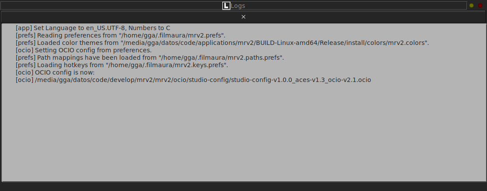
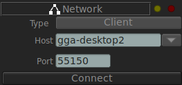
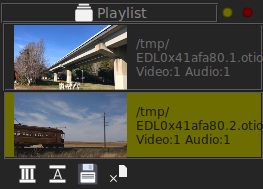
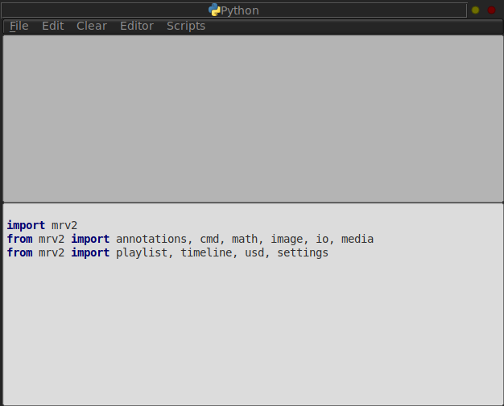

Panels
Annotations Panel

The Annotations Panel allows you to control the Text, Sketch and Notes. You can select a Font to use for the Text tool. You can select a hard or soft brush for the draw tools. And you can draw Laser sketches, so they are not permanent and instead vanish in time.
You can also control the ghosting behavior of all annotations and select whether the annotation to be drawn will be attached to the current frame or to all the frames.
Finally, you can type in Notes that will be printed out next to the image if saving a PDF file.
Color Area Panel

The Color Area Panel allows you to compare a rectangular selection of the image to show its color values, minimum, maximum and mean average.
Color Panel

The Color Panel (F6 by default) allows controlling the color display of the viewport. It allows you to control the Add, Contrast, Saturation and Tint. You can Invert the image and set the In/Out Levels and gamma. You can also add a LUT to be executed before or after all the color changes.
Compare Panel

The Compare Panel is similar to the Files Panel, but allows selecting multiple clips for comparison. You can show the A (Files Panel) image, the B (Compare Panel) image, Wipe, Overlay (using an alpha channel if present), Difference, Horizontal, Vertical and Tile. The Tile comparison allows multiple images to be tiled.
Environment Map Panel

The Environment Map Panel allows you to display an image in the viewport as an environment map (Spherical or Cubical). It also allows you to rotate the view around with the middle mouse button in the view window and change the field of view with the mousewheel.
Files Panel

The Files Panel (F4 by default) show all elements loaded. It has seven buttons at the bottom to Add a new File, Load a new File with Audio, Close the currently selected file, Close All the selected files, switch to the Previous or to the Next media file and filter Temporary EDL Playlists from the Files Panel.
Histogram Panel

The Histogram Panel allows you to show a histogram of the selected area of the image. You select the area with the select tool in the Tool Dock where the drawing tools are located.
Logs Panel
The Logs Panel registers all the important messages that mrv2 emits. It will show the start-up message to show where all the files come from (preferences, hotkeys, path mappings, OCIO config, etc). It will also show any errors that may happen during the operation of mrv2.
In Window->Preferences->Errors the behavior of the Log Panel can be changed when an error occurs. The default behavior is to bring up the Log Panel in a Window, but you can also bring up the log panel docked, or you can ignore the error and not popup the log panel.
Media Information Panel

The Media Information Panel is the work horse for displaying all data about the selected media. It shows all layers, codecs, levels, frame ranges, etc.
Network Panel
The Network Panel allows you to start a sync session between two or more machines. For it to work, you must set one of the machine as a server and the other machines as clients that connect to that machine. The machines are distinguised by their IPv4 or IPv6 address or their host alias names if you use a hosts file on your OS. In addition to the machine, you need to specify a port number to connect to, but the default port number should be fine.
For the connection to take place, you need to make sure your firewall allows incoming and outgoing connections to the port you set up.
Playlist Panel
The Playlist panel allows you to quickly create OpenTimelineIO playlists (aka EDLs) by appending several clips from the Files Panel together. This is done by dragging a file from the Files Panel to the Playlist Panel or to the Timeline Viewport when the EDL playlist is selected. Note that you need to select the Playlist EDL in either the Files or Playlist panels and when dragging the File to the playlist, you should not click and release the mouse button on the file on the File panel, but instead click and drag it.
The media files don’t have to have the same resolutiono or FPS, but they should match in video and audio tracks. Currently only one video and one audio track is allowed.
The EDLs can be created even when a network connection is in place, assuming all clips exist or can be accessed on all the machines.
Each media that is added to a playlist can have an In and Out point to select just a portion of the clip and the same clip can appear multiple times with different In and Out points.
Python Panel
The Python panel allows you to run python code and use mrv2’s Python API to control the viewer. The Panel is divided into two sections. The section above records the python output, while the section below is where you type your code. In order to run the code, you can use the Menus or click on the Keypad Enter key.
You can also select a portion of the code in the editor to run just that instead of all the code typed in the editor.
Settings Panel

The Settings Panel (Default Hotkey: F9) allows you mainly to configure the Cache behavior of mrv2. In it you can control how much memory in Gb does the cache use or, if you set the Gigabytes control to 0, instead of using Gigabytes, the Read Ahead and Read Behind settings will control the caching based on seconds.
The default Gigabytes setting is to use half of your available RAM.
Stereo 3D Panel

The Stereo 3D Panel allows you to show 3D stereo images. You select one clip on the Files Panel and one clip on the Stereo Panel and select the type of Input and Output you want. If you use EXR images with left/right layers, you can select Image as Input and the Files and Stereo clips will be selected automatically. The Output for the Stereo 3D currently can be: Anaglyph, Checkerboard, Scanline or Horizontal.
USD Panel

The USD Panel allows you to control the quality and display of the next USD asset(s) to be loaded.
Vectorscope Panel

The Vectorscope Panel allows you to show a vectorscope of the selected area of the image. You select the area with the select tool in the Tool Dock where the drawing tools are located.